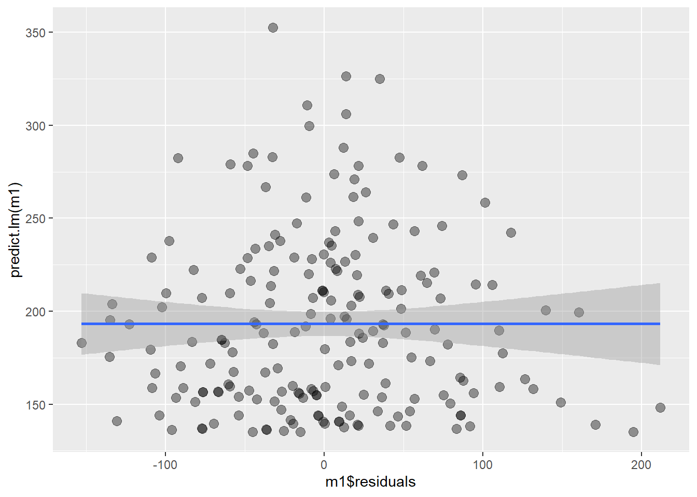
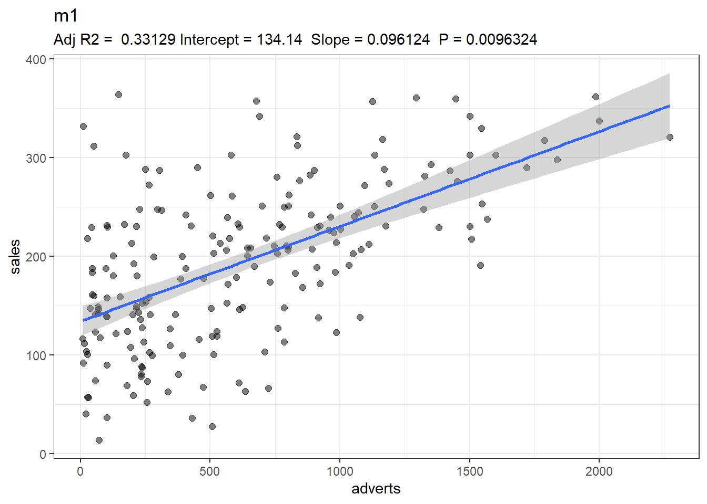
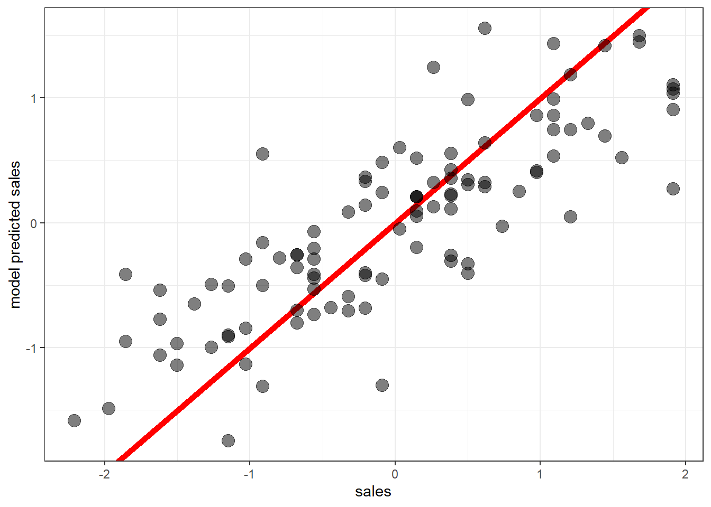
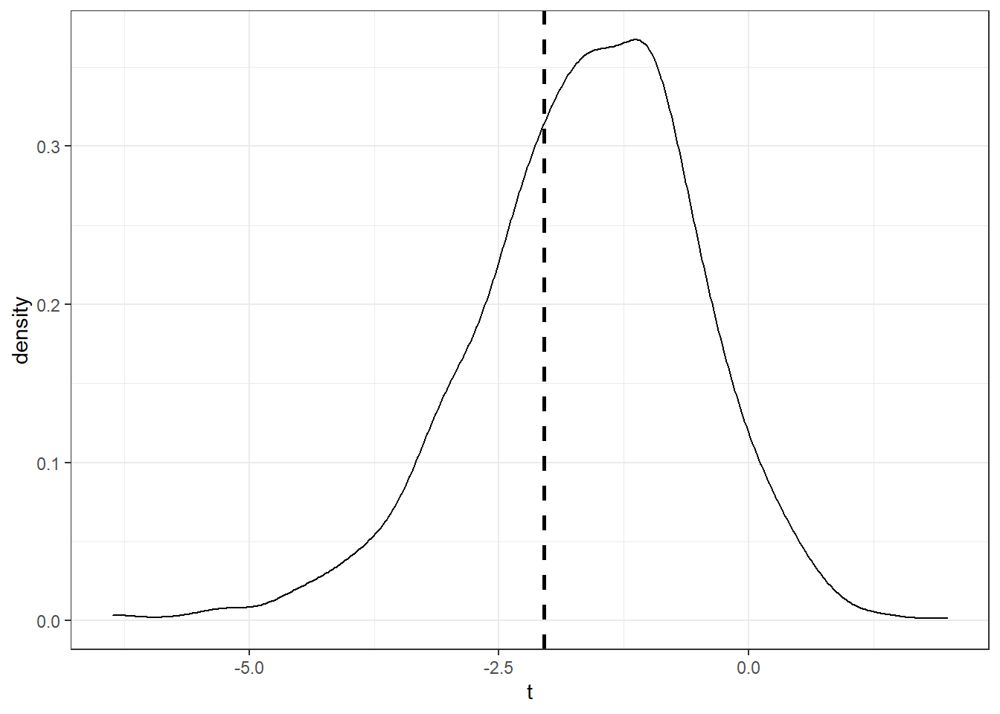
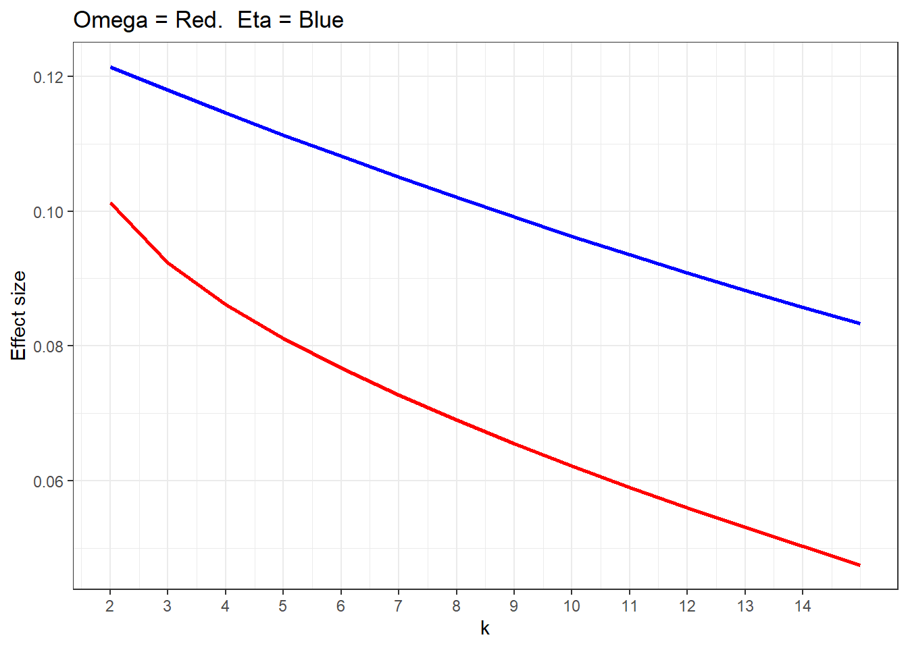

9 Regression analysis
9.1 Univariate regression and multiple regression
Packages need to follow along with the code, special packages will be loaded when and if needed.
library(tidyverse)
library(car)
library(haven)
library(here)Regression is not always easily visualised. This here is a function that will visualise a univariate slope along with some of the most important measurements. This is a slight adaption from a function I found here: https://sejohnston.com/2012/08/09/a-quick-and-easy-function-to-plot-lm-results-in-r/
regplot <- function (fit, name) {
ggplot(fit$model, aes_string(x = names(fit$model)[2], y = names(fit$model)[1])) +
geom_jitter( alpha = .5, size = 2) +
stat_smooth(method = "lm") +
labs(title = name, subtitle = paste("Adj R2 = ",signif(summary(fit)$adj.r.squared, 5),
"Intercept =",signif(fit$coef[[1]],5 ),
" Slope =",signif(fit$coef[[2]], 5),
" P =",signif(summary(fit)$coef[4], 5)))+
theme_bw()
}Field uses data from album sales. When loading data in r the best way is to put your data files in an easy to access place - note that this is my path, the data file is album sales from chapter 8 or 9 depending on edition so load that.
data <- read_sav("Album Sales.sav")
#Let´s change the names to low caps so we can type easily.
names(data) <- c('adverts', 'sales', 'airplay', 'image')
#Taking a peek at the data
head(data)## # A tibble: 6 x 4
## adverts sales airplay image
## <dbl> <dbl> <dbl> <dbl>
## 1 10.3 330 43 10
## 2 986. 120 28 7
## 3 1446. 360 35 7
## 4 1188. 270 33 7
## 5 575. 220 44 5
## 6 569. 170 19 5summary(data)## adverts sales airplay image
## Min. : 9.104 Min. : 10.0 Min. : 0.00 Min. : 1.00
## 1st Qu.: 215.918 1st Qu.:137.5 1st Qu.:19.75 1st Qu.: 6.00
## Median : 531.916 Median :200.0 Median :28.00 Median : 7.00
## Mean : 614.412 Mean :193.2 Mean :27.50 Mean : 6.77
## 3rd Qu.: 911.226 3rd Qu.:250.0 3rd Qu.:36.00 3rd Qu.: 8.00
## Max. :2271.860 Max. :360.0 Max. :63.00 Max. :10.00All variables are treated as numerical. Before any formal analysis can be pursued, we should first visually inspect the variables.
#I usually prefer histograms without density curves but let’s use them both to visualise the distribution of our data.
ggplot(data, aes(adverts))+
geom_histogram(aes(y = ..density..), color = 'steelblue', size = 1)+
geom_density()
ggplot(data, aes(sales))+
geom_histogram(aes(y = ..density..), color = 'steelblue', size = 1)+
geom_density()ggplot(data, aes(airplay))+
geom_histogram(aes(y = ..density..), color = 'steelblue', size = 1)+
geom_density()ggplot(data, aes(image))+
geom_histogram(aes(y = ..density..), color = 'steelblue', size = 1)+
geom_density()
#looks pretty good, the ..density.. call is what gives the curve. So this is what we are working with, our IVs don’t need to be normal, the residuals need to be normal however. We don’t want heteroskedasticity. The neat thing with having multiple continuous variables is that it opens up plotting possibilities. Let’s make some graphs
ggplot(data = data, aes(y = sales, x = adverts
, size = image, colour = airplay))+
geom_point(alpha = .8)+
theme_bw()#It is a bit messy, lets clean our plot by colouring by image. Let’s first colour by images that’s less than 5
ggplot(data = data, aes(y = sales, x = adverts
, size = airplay, colour = image < 5))+
geom_point(alpha = .5)+
theme_bw()
#interesting, most bands have an image at 5 or above, and those that don’t do not sell well regardless of their advert budget or image (the size of the points are roughly the same). Let’s colour by image <8
ggplot(data = data, aes(y = sales, x = adverts
, size = airplay, colour = image < 8))+
geom_point(alpha = .5)+
theme_bw()#Pretty graphs right? This is a better spread. But we can see that image does not seem to impact sales that much. There seems to be an effect, however. The most interesting thing with this graph however is that a high advert budget more or less promises good sales. No band with a budget less than 1 000 000 pounds have less than 100 000 album sales. A crude heuristic for bands wanting to fund their adverts with album sales could be to not sell their album for less than 10£. But this is of course bad advice. We have no information on the cost of the albums and sales are most likely affected by the cost of the album. Nevertheless, this is a fun graph.
Let’s make image into a factor so we can split our graphs better using the facet_wrap function
plotdata <- data
plotdata$image <- as.factor(plotdata$image)
#Now image is a factor with to levels. Let’s use the image of the band as colour
ggplot(data = plotdata, aes(y = sales, x = adverts
, size = airplay, colour = image))+
geom_point(alpha = .8)+
facet_wrap(~image)+
theme_bw()
#Or
ggplot(data = plotdata, aes(y = sales, x = adverts
, colour = airplay))+
geom_point(size = 3, alpha = .8)+
facet_wrap(~image)+
theme_bw()
#Note that one graph colours airplay while the other imageAnother interesting graph. Interestingly we can see that the band with the highest image has no advert budget. However, very few bands with that high image exists. The main idea this graph gives is that the slope between sales and advert budget does not seem to depend heavily on the image of the band. However, bands with low image often have less advert budget - and less sales. we can also see a relationship between airplay and sales, bigger points are usually a bit higher up on sales than small points.
So what are our expectations given the graphs? we should expect an effect of image airplay and adverts on sales, but there will probably not be any meaningful interactions between them since no relationship was observable in the graphs. let’s see if this holds up.
our first model is a simple regression of adverts on album sales. We would expect more sales with more advert budget take a look at the lm function for syntax and code reference.
?lm
#fitting the model
m1 <- lm(sales ~ adverts, data = data)One of the most important things we have to do when analysing data using statistical methods is checking that our assumptions for our method holds. For regression that: normality of residuals, independent errors, no multicollinearity, and homogeneity of variance in the residuals. Let’s check these things out.
#Checking the residuals and normality assumption
ggplot(data = data, aes(y = predict.lm(m1), x = m1$residuals))+
geom_point(size = 3, alpha = .4)+
geom_smooth(method = 'lm')
#Nice, the predicted values of our model is distributed quite normally across the residuals. This indicates that the variation in our model is roughly equal on low, medium, and high point estimates. We can also check the density of the
#Residuals - they should be normal around 0.
ggplot(data = data, aes(x = m1$residuals))+
geom_density()ggplot(data = data, aes(x = m1$residuals))+
geom_histogram(colour = 'steelblue', size = 1)#Nice, this means that our error in measurement isn’t systematically lower or higher than our fitted model.
#Checking error independence with Durbin Watson test
durbinWatsonTest(m1)## lag Autocorrelation D-W Statistic p-value
## 1 -0.04394305 2.032324 0.772
## Alternative hypothesis: rho != 0#Nice, the p-value is insignificant and the test-statistic is close to 2.Now that we have checked our assumptions and have a good ground to stand on, we can check the fit of our model.
#Checking the fit of the model
summary.lm(m1)##
## Call:
## lm(formula = sales ~ adverts, data = data)
##
## Residuals:
## Min 1Q Median 3Q Max
## -152.949 -43.796 -0.393 37.040 211.866
##
## Coefficients:
## Estimate Std. Error t value Pr(>|t|)
## (Intercept) 1.341e+02 7.537e+00 17.799 <2e-16 ***
## adverts 9.612e-02 9.632e-03 9.979 <2e-16 ***
## ---
## Signif. codes: 0 '***' 0.001 '**' 0.01 '*' 0.05 '.' 0.1 ' ' 1
##
## Residual standard error: 65.99 on 198 degrees of freedom
## Multiple R-squared: 0.3346, Adjusted R-squared: 0.3313
## F-statistic: 99.59 on 1 and 198 DF, p-value: < 2.2e-16#Lets plot this manually in ggplot using geom_smooth, on our model
ggplot(data, aes(y = sales, x = adverts))+
geom_point(alpha = .5, size = 2)+
geom_smooth(method = 'lm')+
theme_bw()
#Geom smooth fits a linear model to the data, method = 'lm' tells it that it’s a linear model. And there we have it, but by using the regplot function we created above we can put some of the info from the model on the plot.
regplot(m1, 'm1')
summary.lm(m1)##
## Call:
## lm(formula = sales ~ adverts, data = data)
##
## Residuals:
## Min 1Q Median 3Q Max
## -152.949 -43.796 -0.393 37.040 211.866
##
## Coefficients:
## Estimate Std. Error t value Pr(>|t|)
## (Intercept) 1.341e+02 7.537e+00 17.799 <2e-16 ***
## adverts 9.612e-02 9.632e-03 9.979 <2e-16 ***
## ---
## Signif. codes: 0 '***' 0.001 '**' 0.01 '*' 0.05 '.' 0.1 ' ' 1
##
## Residual standard error: 65.99 on 198 degrees of freedom
## Multiple R-squared: 0.3346, Adjusted R-squared: 0.3313
## F-statistic: 99.59 on 1 and 198 DF, p-value: < 2.2e-16#Nice graph with good info :) Pretty neat right? now, what can we make of this? the slope estimates of ca 0.1 indicates that sales increase by .1 for every unit of adverts. The equates to roughly 100 sales per thousand pounds in advertising budget. Also, note the shaded line. This is our marginal 95% confidence interval. We can see that our uncertainty in the parameter estimate increases at the mode extreme values since we don’t have a lot of data regarding the dispersion on those levels of “adverts”.
We should also check for influential cases analytically, not just visually. we can do this with the function “lm.influence”.
summary(influence.measures(m1))## Potentially influential observations of
## lm(formula = sales ~ adverts, data = data) :
##
## dfb.1_ dfb.advr dffit cov.r cook.d hat
## 1 0.35 -0.27 0.35_* 0.93_* 0.06 0.01
## 10 0.22 -0.15 0.22 0.97_* 0.02 0.01
## 11 0.01 -0.02 -0.03 1.04_* 0.00 0.03_*
## 23 -0.02 0.04 0.04 1.05_* 0.00 0.03_*
## 42 0.29 -0.22 0.29 0.95_* 0.04 0.01
## 43 -0.02 0.04 0.05 1.06_* 0.00 0.05_*
## 75 -0.02 0.04 0.05 1.03_* 0.00 0.02
## 87 -0.06 0.11 0.12 1.05_* 0.01 0.05_*
## 88 0.02 -0.03 -0.03 1.05_* 0.00 0.04_*
## 92 -0.01 0.01 0.01 1.03_* 0.00 0.02
## 93 -0.01 0.03 0.03 1.04_* 0.00 0.03
## 113 -0.13 0.04 -0.17 0.96_* 0.01 0.01
## 124 0.09 0.02 0.18 0.96_* 0.02 0.01
## 126 0.05 -0.10 -0.11 1.03_* 0.01 0.02
## 169 0.32 -0.23 0.33_* 0.92_* 0.05 0.01
## 175 0.03 -0.07 -0.08 1.03_* 0.00 0.02
## 184 0.08 -0.13 -0.13 1.08_* 0.01 0.06_*summary(cooks.distance(m1))## Min. 1st Qu. Median Mean 3rd Qu. Max.
## 3.000e-08 3.380e-04 1.576e-03 4.416e-03 6.314e-03 5.716e-02#let’s look at the hat values manually
summary(hatvalues(m1))## Min. 1st Qu. Median Mean 3rd Qu. Max.
## 0.005000 0.005732 0.008030 0.010000 0.011305 0.063529hatvalues(m1)%>% sort.default(decreasing = TRUE) %>% head(20) ## 184 43 87 88 23 11 93 126
## 0.06352892 0.04590335 0.04502948 0.03687259 0.03442720 0.03108016 0.02569576 0.02435532
## 175 28 55 46 62 75 199 92
## 0.02353610 0.02344638 0.02334463 0.02201132 0.02170914 0.02170914 0.02170914 0.01997151
## 3 128 20 102
## 0.01971805 0.01894939 0.01751014 0.01656749Going by cooks distance we don’t seem to have any very influential values, that is, values exceeding 1. However, we have some values that exceeds three times the leverage or hatvalues. if we go by hoaglin and welch guides of looking at values exceeding three times the average, that is values exceeding .03. that is, observation 11, 23, 88, 87, 43 and 184. What happens if we remove them?
clean_data <- slice(data, -c(11, 23, 88, 87, 43, 184))
clean_m1 <- lm(sales~adverts, clean_data)
regplot(clean_m1, 'clean m1')
summary.lm(clean_m1)##
## Call:
## lm(formula = sales ~ adverts, data = clean_data)
##
## Residuals:
## Min 1Q Median 3Q Max
## -152.910 -44.484 -0.291 38.368 211.845
##
## Coefficients:
## Estimate Std. Error t value Pr(>|t|)
## (Intercept) 134.18426 8.00113 16.771 < 2e-16 ***
## adverts 0.09596 0.01116 8.602 2.76e-15 ***
## ---
## Signif. codes: 0 '***' 0.001 '**' 0.01 '*' 0.05 '.' 0.1 ' ' 1
##
## Residual standard error: 66.9 on 192 degrees of freedom
## Multiple R-squared: 0.2782, Adjusted R-squared: 0.2744
## F-statistic: 73.99 on 1 and 192 DF, p-value: 2.763e-15#.Does not change much in terms of estimation. We can compare the graphs using the grid arrange function from the gridExtra package
library(gridExtra)
m1_plot <- regplot(m1, 'original model')
clean_m1_plot <- regplot(clean_m1, 'influential observations removed')
grid.arrange(m1_plot, clean_m1_plot, name = c('original', 'clean'))#.Here we can easily see that the influential observations were the cases with very high advertising budgets. it might be prudent to use the updated model, but no model is “better” than the other. We should use the model that helps us answer our research question best - “horses for courses”
A fast way, but less pleasing and not as hands on, is to simply use the “plot” function. It gives much of the same information
plot(m1)

plot(clean_m1)
#.Note that the spread of fitted to residuals is much nicer when we exclude the influential observations.
let’s kick this up a notch and run a multiple regression on a split sample so that we can cross-validate our model. let’s take all the variables in our data
#Splitting our sample randomly using rbinom
set.seed(123)
data_partition <- rbinom(200, 1, prob = .5)
data <- cbind(data, data_partition)
rm(data_partition)
#The binary variable "data partition" is our random divide of the sample in to 2. We will run the regression on one part of the sample and see how well it predicts the data in the second sample. let’s call it training data and test data.
training_data <- filter(data, data_partition == 1)
glimpse(training_data$data_partition)## int [1:97] 1 1 1 1 1 1 1 1 1 1 ...test_data <- filter(data, data_partition == 0)
glimpse(test_data$data_partition)## int [1:103] 0 0 0 0 0 0 0 0 0 0 ...Now we have our two samples, lets fit our training model. it works the same way as the simple regression, but we just add the additional IVs like you would in a normal regression formula. but first let’s standardize the data so it’s more easily comparable
#Standardising, or, "scaling" our data
z_training_data <- data.frame(scale(training_data))
z_test_data <- data.frame(scale(test_data))
#Fitting the multiple regression
training_model <- lm(sales ~ adverts + image + airplay, data = z_training_data)Like for the simple regression we need to check our assumptions
#Checking the residuals and normality assumtions
ggplot(data = training_data, aes( y = predict.lm(training_model)
, x = training_model$residuals))+
geom_point(size = 3, alpha = .4)+
geom_smooth(method = 'lm')#Looks good
ggplot(data = training_data, aes(x = training_model$residuals))+
geom_density()ggplot(data = training_data, aes(x = training_model$residuals))+
geom_histogram(colour = 'steelblue', size = 1)#Nice
#We need to check for multicollinearity when we do multiple regression. A cool way to do this is with GGally, but we can also just calculate VIF and tolerance(1/vif)
vif(training_model)## adverts image airplay
## 1.063294 1.066953 1.0533051/vif(training_model) ## adverts image airplay
## 0.9404740 0.9372484 0.9493924#Tolerance is simply 1 divided by the VIF. Our vif should be <10 and our tolerance
# >.2.
library(GGally)
ggpairs(training_model)#Don´t worry about this, this is just a cool diagnostic tool with loads of info in a single plot with a very simple call.
#Checking error independence with Durbin Watson test
durbinWatsonTest(training_model)## lag Autocorrelation D-W Statistic p-value
## 1 0.00282891 1.887567 0.586
## Alternative hypothesis: rho != 0#Still looks good, but notice that the test statistic is less close to 2.
#Small sample = badNow, let’s check the fit of out model
summary.lm(training_model)##
## Call:
## lm(formula = sales ~ adverts + image + airplay, data = z_training_data)
##
## Residuals:
## Min 1Q Median 3Q Max
## -1.4006 -0.2931 -0.0123 0.3958 1.3417
##
## Coefficients:
## Estimate Std. Error t value Pr(>|t|)
## (Intercept) 1.215e-16 6.004e-02 0.000 1.000000
## adverts 4.901e-01 6.223e-02 7.876 6.16e-12 ***
## image 2.161e-01 6.234e-02 3.466 0.000802 ***
## airplay 4.666e-01 6.194e-02 7.532 3.18e-11 ***
## ---
## Signif. codes: 0 '***' 0.001 '**' 0.01 '*' 0.05 '.' 0.1 ' ' 1
##
## Residual standard error: 0.5913 on 93 degrees of freedom
## Multiple R-squared: 0.6613, Adjusted R-squared: 0.6503
## F-statistic: 60.51 on 3 and 93 DF, p-value: < 2.2e-16regplot(training_model, 'training model')#.All estimates are significant, indicating that all variables contribute to the number of sales, we have also doubled the R2, we can explain much more of the variation with this model. Note also how the visuals suck. it’s hard to visualize multiple regression. But let’s try some ways of visualising.
One way is to use the broom package like so:
library(broom)
#We need to make image into a factor
training_data$image <- as.factor(training_data$image)
#We then fit the model that we want to plot
plot1 <- lm(sales ~ adverts + image, data = training_data)
#Then, using the augment function we can fit a slope to each level of "image"
ggplot(augment(plot1), aes(y = sales, x = adverts, col = image))+
geom_point()+
geom_smooth(method = 'lm', se = FALSE)+
theme_bw()#.This is a visualization of the sales across advert budget grouped by the band image, we can see that bands with a bad image (1), have fever sales, but they also have less budget. But we also see differences in slope depending on image. the band with the best image has a flatter slope then the bands with slightly worse image. Note that we already know this from our previous graphs, and they are way less messy, this is not a very good graph I think.
Again, visualizing multiple regression is hard, since the dimensions become hard to grasp after two or more variables, given that we care about interactions. One other way is though plotting marginal predictions or coefficients. This illustrates the regression output quite nicely I think, this is sometimes referred to as a simple slopes graph.
#Lets extract the coefficients from the model
cf <- training_model$coef
intercept <- cf[1]
adverts <- cf[2]
adverts <- round(adverts, 4)
image <- cf[3]
image <- round(image, 4)
airplay <- cf[4]
airplay <- round(airplay, 4)
#Here they are
paste(adverts, image, airplay)## [1] "0.4901 0.2161 0.4666"#This is a grid of values so that the plot has structure - this will be invisible in the graph
statgrid <- data.frame( y = seq(from = 0, to = adverts, length = 100)
,x = seq(from = 0, to = 1, length = 100))
#Plotting the slopes
ggplot(data = statgrid, aes(x = x, y = y))+
geom_jitter(alpha = 0)+
geom_abline(intercept = intercept, slope = adverts
, col = 'blue', size = 1)+
geom_abline(intercept = intercept, slope = image
, col = 'red', size = 1)+
geom_abline(intercept = intercept, slope = airplay
, col = 'green', size = 1)+
ylab(label = 'standardised sale value')+
xlab(label = 'dependent variable slope')+
theme_bw()+
labs(title = 'Adverts = blue | Image = red | Airplay = green')
#Our simple slopes plotThis visualization shows the slopes from the model. That is, the increase in units of sales when the dependent variable increases with one independently. I do not see this type of visualisation often but i quite like it. I think it’s a neat way of visualising a regression output. It is quite abstract though, since it requires that you scale you DVs so they can fit the same plot.
Lastly, let’s see if we have any significant interaction effects, this is a little teaser for what we will do later on in the moderation chapter but I think it might be a good idea to see if we have an interaction here. Going by the graphs earlier we should not expect anything big.
# A third model that uses the interaction between image and adverts
m3 <- lm(sales ~ adverts*image + airplay, data = z_training_data)
summary.lm(m3)##
## Call:
## lm(formula = sales ~ adverts * image + airplay, data = z_training_data)
##
## Residuals:
## Min 1Q Median 3Q Max
## -1.4197 -0.2856 0.0063 0.4046 1.3321
##
## Coefficients:
## Estimate Std. Error t value Pr(>|t|)
## (Intercept) 0.01604 0.06137 0.261 0.79438
## adverts 0.49317 0.06214 7.937 4.87e-12 ***
## image 0.18976 0.06594 2.878 0.00498 **
## airplay 0.45808 0.06220 7.365 7.36e-11 ***
## adverts:image -0.07987 0.06652 -1.201 0.23294
## ---
## Signif. codes: 0 '***' 0.001 '**' 0.01 '*' 0.05 '.' 0.1 ' ' 1
##
## Residual standard error: 0.5899 on 92 degrees of freedom
## Multiple R-squared: 0.6665, Adjusted R-squared: 0.652
## F-statistic: 45.96 on 4 and 92 DF, p-value: < 2.2e-16#The interaction is not significant. let’s go all out and fit a full interaction model - our fourth model
m4 <- lm(sales ~ adverts*image*airplay, data = z_training_data)
summary.lm(m4)##
## Call:
## lm(formula = sales ~ adverts * image * airplay, data = z_training_data)
##
## Residuals:
## Min 1Q Median 3Q Max
## -1.39859 -0.27268 -0.00666 0.38561 1.33742
##
## Coefficients:
## Estimate Std. Error t value Pr(>|t|)
## (Intercept) 0.011502 0.068353 0.168 0.8668
## adverts 0.505923 0.070951 7.131 2.54e-10 ***
## image 0.185909 0.081013 2.295 0.0241 *
## airplay 0.445473 0.068210 6.531 3.93e-09 ***
## adverts:image -0.102109 0.086212 -1.184 0.2394
## adverts:airplay 0.002962 0.084294 0.035 0.9720
## image:airplay 0.074178 0.100145 0.741 0.4608
## adverts:image:airplay 0.029568 0.131518 0.225 0.8226
## ---
## Signif. codes: 0 '***' 0.001 '**' 0.01 '*' 0.05 '.' 0.1 ' ' 1
##
## Residual standard error: 0.5975 on 89 degrees of freedom
## Multiple R-squared: 0.6691, Adjusted R-squared: 0.643
## F-statistic: 25.71 on 7 and 89 DF, p-value: < 2.2e-16So, simply going by this the interaction terms does not do much for us. let’s just stick with our original training model and see how well it predicts our test data. Let’s extract our predictions
#We need to load in the caret package for this (more on this later in the cross validation chapter)
library(caret)
# Make predictions and compute the R2, RMSE and MAE
predictions <- training_model %>% predict(test_data)
data.frame( R2 = R2(predictions, test_data$sales),
RMSE = RMSE(predictions, test_data$sales),
MAE = MAE(predictions, test_data$sales))## R2 RMSE MAE
## 1 0.318754 242.4139 189.1693#We have an RMSE of 242, if the training model has a lower one, it fits better
#We need to make image numeric for prediction purposes
training_data$image <- as.numeric(training_data$image)
predictions.2 <- training_model %>% predict(training_data)
data.frame( R2 = R2(predictions.2, training_data$sales),
RMSE = RMSE(predictions.2, training_data$sales),
MAE = MAE(predictions.2, training_data$sales))## R2 RMSE MAE
## 1 0.390846 227.6169 167.243#So, not very unexpectedly, we have better fit on this model.
#Let´s store some predictions for plotting
#Prediction on the training data
pred_train <- training_model %>% predict(z_training_data)
#Prediction on the test data
pred_test <- training_model %>% predict(z_test_data) Let’s plot the predictions
#For reference, this is what a perfect prediction would look like
ggplot(data = data.frame(data), aes(sales))+
geom_abline(intercept = 0, slope = 1, size = 2, col = 'red')+
geom_point(aes(y =sales, x = sales), size = 4, alpha = .5)+
ylab(label = 'sales')+
labs(title = 'perfect prediction')+
theme_bw()
#Training data prediction
ggplot(data = data.frame(z_training_data), aes(sales))+
geom_abline(intercept = 0, slope = 1, size = 2, col = 'red')+
geom_point(aes(y =pred_train, x = sales), size = 4, alpha = .5)+
ylab(label = 'model predicted sales')+
theme_bw()#.This shows how well our model performs, the red line indicating perfect predictions that is, if we could estimate the number of sales perfectly. Which we clearly can’t, let´s look at our out of sample prediction.
ggplot(data = data.frame(z_test_data), aes(sales))+
geom_abline(intercept = 0, slope = 1, size = 2, col = 'red')+
geom_point(aes(y =pred_test, x = sales), size = 4, alpha = .5)+
ylab(label = 'model predicted sales')+
theme_bw()
#.Let’s compare all the plots using the grid arrange function again
perfect_pred <- ggplot(data = data.frame(scale(data)), aes(sales))+
geom_abline(intercept = 0, slope = 1, size = 2, col = 'red')+
geom_point(aes(y =sales, x = sales), size = 4, alpha = .5)+
ylab(label = 'sales')+
labs(title = 'perfect prediction')+
theme_bw()
insample_pred <- ggplot(data = data.frame(z_training_data), aes(sales))+
geom_abline(intercept = 0, slope = 1, size = 2, col = 'red')+
geom_point(aes(y =pred_train, x = sales), size = 4, alpha = .5)+
ylab(label = 'predicted sales')+
labs(title = 'insample prediction')+
theme_bw()
outsample_pred <- ggplot(data = data.frame(z_test_data), aes(sales))+
geom_abline(intercept = 0, slope = 1, size = 2, col = 'red')+
geom_point(aes(y =pred_test, x = sales), size = 4, alpha = .5)+
ylab(label = 'predicted sales')+
labs(title = 'out of sample prediction')+
theme_bw()
grid.arrange(perfect_pred, insample_pred, outsample_pred)#This last piece of code compiles the graphs And there we have it, this model seems pretty good. Nothing amazing, but pretty good. In “reality” out of sample predictions are usually worse, but since we have such a simple model with reasonable dependent variables, this is not that unexpected. We certainly dont have issues with over-fitting our model, which can cause it to make poor out of sample predictions.
In this chapter we have gone through a little bit of everything, we have some prediction some moderation some cross validation and of course the simple regression analysis. In future chapters we will take a closer look at all of these methods, if you want to have a more “real” example of regression check out the last chapter where we use real messy data for various analyses.
9.2 Comparing means
9.2.1 A primer on means and effect sizes with simulation
We should all be familiar with means, spreads, distributions by now. Let’s use an example from Field to get a good look at how this comes together when we compare means. We will be using the invisibility cloak data since I think that´s funny. The question is, will an invisibility cloak make you more mischievous?
library(tidyverse)
library(here)
library(faux)
library(haven)
invisibility <- read_sav(here("data sets/Invisibility.sav"))
#Checking the data structure
str(invisibility)## tibble [24 x 2] (S3: tbl_df/tbl/data.frame)
## $ Cloak : dbl+lbl [1:24] 0, 0, 0, 0, 0, 0, 0, 0, 0, 0, 0, 0, 1, 1, 1, 1, 1, 1, 1, 1, 1, 1,...
## ..@ label : chr "Cloak of invisibility"
## ..@ format.spss: chr "F8.0"
## ..@ labels : Named num [1:2] 0 1
## .. ..- attr(*, "names")= chr [1:2] "No Cloak" "Cloak"
## $ Mischief: num [1:24] 3 1 5 4 6 4 6 2 0 5 ...
## ..- attr(*, "label")= chr "Mischievous Acts"
## ..- attr(*, "format.spss")= chr "F8.0"#Renaming to lower caps
names(invisibility) <- c('cloak', 'mischief')
#making invisibility a factor
invisibility$cloak <- as.factor(invisibility$cloak)
#Taking some descriptive statistics using pastecs
by(invisibility$mischief, invisibility$cloak, pastecs::stat.desc)## invisibility$cloak: 0
## nbr.val nbr.null nbr.na min max range
## 12.0000000 1.0000000 0.0000000 0.0000000 6.0000000 6.0000000
## sum median mean SE.mean CI.mean.0.95 var
## 45.0000000 4.0000000 3.7500000 0.5521995 1.2153828 3.6590909
## std.dev coef.var
## 1.9128750 0.5101000
## -------------------------------------------------------------------
## invisibility$cloak: 1
## nbr.val nbr.null nbr.na min max range
## 12.0000000 0.0000000 0.0000000 2.0000000 8.0000000 6.0000000
## sum median mean SE.mean CI.mean.0.95 var
## 60.0000000 5.0000000 5.0000000 0.4767313 1.0492785 2.7272727
## std.dev coef.var
## 1.6514456 0.3302891#Let´s plot it also so we can get a better look.
#First, we look at the histograms for mischief for cloak and no cloak
ggplot(data = filter(invisibility, cloak == 0))+
geom_histogram(aes(mischief), fill = 'darkred')+
labs(title = 'No cloak')+
theme_bw()ggplot(data = filter(invisibility, cloak == 1))+
geom_histogram(aes(mischief), fill = 'steelblue')+
labs(title = 'Cloak')+
theme_bw()
invisibility%>%
ggplot(aes(x = mischief, colour = cloak))+
geom_density(size = 2, aes(fill = cloak), alpha = .3)+
theme_bw()#They are not distributed very differently; we should be able to compare these two groups alright. Let´s plot the median difference with violins and boxes.
invisibility%>%
ggplot(aes(y = mischief, x = cloak, colour = cloak))+
geom_violin(aes(fill = cloak), alpha = .4)+
geom_boxplot(width = .3, colour = 'grey', size = 1)+
theme_bw()#Posessing a cloak seems to make someone slightly more mischievous. Let´s check if the difference is statistically significant using the t-test
t <- t.test(mischief ~ cloak, data = invisibility)
t##
## Welch Two Sample t-test
##
## data: mischief by cloak
## t = -1.7135, df = 21.541, p-value = 0.101
## alternative hypothesis: true difference in means between group 0 and group 1 is not equal to 0
## 95 percent confidence interval:
## -2.764798 0.264798
## sample estimates:
## mean in group 0 mean in group 1
## 3.75 5.00library(effectsize)
effectsize(t)## Warning in effectsize.htest(t): Unable to retrieve data from htest object. Using t_to_d()
## approximation.## d | 95% CI
## ---------------------
## -0.74 | [-1.60, 0.14]Seems like we don’t have a very robust difference, let’s see if we can simulate the distribution of the populations using the rnorm function and the mean and spread of mischief for cloak and no cloak.
no_cloak <- rnorm(n = 1e4, mean = 3.75, sd = 1.91)
#Since we are working with ordinal scales, we need to truncate our values
no_cloak <- norm2trunc(no_cloak, min = 0)
#We also need to round our values.
no_cloak <- round(no_cloak, 0)
cloak <- rnorm(n = 1e4, mean = 5, sd = 1.65)
cloak <- norm2trunc(cloak, min = 0)
cloak <- round(cloak, 0)
#Creating a data set with our simulated values
data <- data.frame(no_cloak, cloak)
names(data) = c('no_cloak', 'cloak')
summary(data)## no_cloak cloak
## Min. : 0.000 Min. : 0.000
## 1st Qu.: 3.000 1st Qu.: 4.000
## Median : 4.000 Median : 5.000
## Mean : 3.864 Mean : 5.005
## 3rd Qu.: 5.000 3rd Qu.: 6.000
## Max. :11.000 Max. :11.000#Plotting our simulated values
ggplot(data)+
geom_histogram(aes(cloak), fill = 'red', alpha = .5)+
geom_histogram(aes(no_cloak), fill = 'blue', alpha = .5)+
xlab('Blue = no cloak. Red = cloak')## `stat_bin()` using `bins = 30`. Pick better value with `binwidth`.
## `stat_bin()` using `bins = 30`. Pick better value with `binwidth`.#Looks pretty nice to me.Let´s run the t-test on the simulated values
sim_t <- t.test(x= no_cloak, y = cloak, data = data)
sim_t##
## Welch Two Sample t-test
##
## data: no_cloak and cloak
## t = -46.15, df = 19819, p-value < 2.2e-16
## alternative hypothesis: true difference in means is not equal to 0
## 95 percent confidence interval:
## -1.189252 -1.092348
## sample estimates:
## mean of x mean of y
## 3.8638 5.0046effectsize(t)## d | 95% CI
## ---------------------
## -0.74 | [-1.60, 0.14]Notice how small the p-value is, this is due to our big sample. But the effect size is not significant, that is, we are not certain that an effect actually exists. If we have a large number of observations, the p-value is generally significant. This simulation is therefore quite bad. Let´s make a type of bootstrap simulation instead, but instead of using sampling from the data we make estimations using the rnorm function with the same sample size as our data, that is n = 12(per group)
#We can use a for-loop for this. First, we create an object for storing our t-values.
resamp_t <- data.frame(t = NA)
#Then we specify our loop. We will make 1000 t-tests and store the t-value in resamp_t
set.seed(69)
for (i in 1:1000){
no_cloak <- rnorm(n = 12, mean = 3.75, sd = 1.91)
no_cloak <- norm2trunc(no_cloak, min = 0)
no_cloak <- round(no_cloak, 0)
cloak <- rnorm(n = 12, mean = 5, sd = 1.65)
cloak <- norm2trunc(cloak, min = 0)
cloak <- round(cloak, 0)
t <- t.test(x= no_cloak, y = cloak, data = data)
resamp_t[i,] <- c(t$statistic)
}
#Epic, let's plot out our t-values and put some lines at the critical values of t for our specific sample size.
ggplot(resamp_t)+
geom_density(aes(t))+
geom_vline(xintercept = -2.048, linetype = 'dashed', size = 1)+
theme_bw()
#Pretty cool right? The dashed line indicates all significant t-tests. We can get somethings that’s similar to a power calculation from this by counting the number of significant test and dividing it by the number of tests we have done. What we get is the ratio of significant results. We can then say that "assuming the effect exists, there is an x change to find it given our sample size".
power <- sum(resamp_t$t<=-2.048)/length(resamp_t$t)
#Note that this is NOT an a priori power calculation but given the sample size of the data we can only find the effect around 33% of the time, this is really bad. Even if we assume that such a big effect size that is observed exists, we are in big trubble.
#Let´s compare our results with a normal power analysis
pwr::pwr.t.test(n = 12, d = .74, sig.level = .05, type = 'two.sample', alternative = 'two.sided')##
## Two-sample t test power calculation
##
## n = 12
## d = 0.74
## sig.level = 0.05
## power = 0.4105285
## alternative = two.sided
##
## NOTE: n is number in *each* group#The results are not the same but the certainly send the same message! In conclusion we can say that a cloak won’t make you more mischievous, or at least we need some more evidence to come to that conclusion. I quite like using simulation as a means of approximating power. It puts the abstract concept of power on a more tangible level, that is, at what quantile does our presumed distribution of t-values reject the null hypothesis? even though this is not ‘true’ power, i think it does a nice job of providing a practical visual.
While we are on the topic of power, we can look at a common practice that can reduce our power quite a bit: median splits. I believe Field calls the devil’s work? let’s find out if they are using simulation.
#First, we create some data with faux, you can use my numbers or choose your own, they are arbitrary.
set.seed(234)
data <- rnorm_multi( n = 400 #the number of obs
, vars = 2 #the number of variables
, mu = c(44, 23) #the mean of our variables
, sd = c(8, 3) #the sd of our variables
, r = .68 #the correlation of our variables
, varnames = c('x', 'y'))#the name of our vars
cor(data)## x y
## x 1.0000000 0.6897844
## y 0.6897844 1.0000000# Here we have a correlation of .689 sampled from a population correlation of .68
#let’s see what happens when we split the data in to quantile splits. That is, divide them in 4 equal parts.
data <-
data %>% mutate(x_quantilegroup = ntile(x, 4)) %>%
mutate(y_quantilegroup = ntile(y, 4)) %>%
head()
cor(data$x_quantilegroup, data$y_quantilegroup)## [1] 0.8443566#This is a very big correlation, probably spurious, lets simulate this to find out. We follow the same procedure as with the t-tests but let’s do 5000 simulations instead. Let´s start with continuous r.
r1 <- data.frame(r1 = NA)
set.seed(3452)
for ( i in 1:5000){
data <- rnorm_multi( n = 400
, vars = 2
, mu = c(44, 23)
, sd = c(8, 3)
, r = .68
, varnames = c('x', 'y'))
r <- data.frame(cor(data$x, data$y) )
r1[i,] <- c(r)
}
#Now let’s split the sample into quantiles - this will take a bit more time
r2 <- data.frame(r2 = NA)
set.seed(435)
for ( i in 1:5000){
data <- rnorm_multi( n = 400
, vars = 2
, mu = c(44, 23)
, sd = c(8, 3)
, r = .68
, varnames = c('x', 'y'))
data <- data %>% mutate(x_quantilegroup = ntile(x, 4)) %>%
mutate(y_quantilegroup = ntile(y, 4))
r <- cor(data$x_quantilegroup,data$y_quantilegroup)
r2[i,] <- c(r)
}
r <- data.frame(r1,r2)
summary(r)## r1 r2
## Min. :0.5558 Min. :0.4660
## 1st Qu.:0.6621 1st Qu.:0.5840
## Median :0.6811 Median :0.6080
## Mean :0.6801 Mean :0.6065
## 3rd Qu.:0.6990 3rd Qu.:0.6300
## Max. :0.7602 Max. :0.7180#Let’s visualise this.
ggplot(r)+
geom_density(aes(r1), fill = 'blue', alpha = .5)+
geom_density(aes(r2), fill = 'red', alpha = .5)+
geom_vline(aes(xintercept = .68), size = 2, linetype = 'dashed')+
xlab('Red = corelation from quantlies. Blue = continus correlation.
Dashed line = true effect size')+
theme_bw()
#.They truly are the devil. We get the wrong effect size. This is something to think about. We should probably not reduce our sample with median/quantile splits if at all possible. A nice thing with simulations is that we have all the information. That is, we know the true effect size since we decide it ourselves.
Another thing that Field harps on about is that the effect size of eta is less preferable than omega. I agree, but it´s not super easy to understand why. We can use simulations again to see how eta and omega behaves in different settings.
Let´s do a play example and say we are testing school classes (on something), we don’t expect a difference between all of them, but we do expect differences between some classes. Here is an example of a comparison between three classes. Note that this part will be a bit code heavy, use the “?” function for the commands you want to take a closer look at :)
#Let´s clean the environment before we start
rm(list = ls())
k <- 3 #number of classes
n1 <- 23 #student in class one
n2 <- 22 #students in class two
n3 <- 25 #students in class three
N <- n1 + n2 + n3
df_b <- k - 1
df_e <- N - k
sst <- 4000 #total sum of squares
ssb <- 500 #sum of squares between
sse <- sst-ssb #sum of squares error
mse <- sse/df_e #mean squared error
ssb/sst #eta## [1] 0.125(ssb-(df_b*mse))/(sst+mse) #omega## [1] 0.09760589Pretty simple right? Let´s change the setting and make a data frame comparison of 14 classes where the sst and ssb increases by 5% for every new class included in the comparison. That is, the explained variance and the total variance increases the same amount - i.e., equally
#Again, I like a clean environment, so i start with a clean slate
rm(list = ls())
k <- c(1:15)
N <- cumsum(rep(25, 15))
df_b <- k - 1
df_e <- N - k
sst <- cumprod(c(4000,rep(1.05, 14)))
ssb <- cumprod(c(500,rep(1.05, 14)))
sse <- sst-ssb
mse <- sse/df_e
eta <- ssb/sst
omega <- (ssb-(df_b*mse))/(sst+mse)
effect_diff <- eta-omega
class_data_equal <- data.frame(k, N, df_b, df_e, sst, ssb, sse, mse, eta, omega, effect_diff)
class_data_equal <- slice(class_data_equal, -1) #removing the first row
View(class_data_equal)Let’s plot this so we can see more clearly
#Plotting both effect sizes
ggplot(class_data_equal)+
geom_line(aes(y = omega, x = k), size = 1, colour = 'red')+
geom_line((aes(y = eta , x = k)),size = 1, colour = 'blue')+
scale_x_continuous(breaks = 1:14)+
ylab('Effect size')+
ggtitle('Omega = Red. Eta = Blue')+
theme_bw()
#Plotting the difference between the effect sizes
ggplot(class_data_equal)+
geom_smooth(aes(y = effect_diff, x = k))+
scale_x_continuous(breaks = 1:14)+
ylab('Effect size difference')+
theme_bw()## `geom_smooth()` using method = 'loess' and formula 'y ~ x'Pretty cool right? let’s make it even worse and look at an example where the explained variance increases less than the increase in total variance. Let’s say that with each additional class, sst increases with 5% and ssb with 2%
sst <- cumprod(c(4000,rep(1.05, 14)))
ssb <- cumprod(c(500,rep(1.02, 14)))
sse <- sst-ssb
mse <- sse/df_e
eta <- ssb/sst
omega <- (ssb-(df_b*mse))/(sst+mse)
effect_diff <- eta-omega
class_data_unequal <- data.frame(k, N, df_b, df_e, sst, ssb, sse, mse, eta, omega, effect_diff)
class_data_unequal <- slice(class_data_unequal, -1) #removing the first row
View(class_data_unequal)let’s plot this too
ggplot(class_data_unequal)+
geom_line(aes(y = omega, x = k), size = 1, colour = 'red')+
geom_line((aes(y = eta , x = k)),size = 1, colour = 'blue')+
scale_x_continuous(breaks = 1:14)+
ylab('Effect size')+
ggtitle('Omega = Red. Eta = Blue')+
theme_bw()
ggplot(class_data_unequal)+
geom_smooth(aes(y = effect_diff, x = k))+
scale_x_continuous(breaks = 1:14)+
ylab('Effect size')+
theme_bw()## `geom_smooth()` using method = 'loess' and formula 'y ~ x'Observe the slight difference in slope, let’s look closer at this difference
equal_unequal_diff <- class_data_unequal$effect_diff - class_data_equal$effect_diff
x.seq <- seq(1:14)
diffplot <- data.frame(equal_unequal_diff, x.seq)
ggplot(diffplot)+
geom_point(aes(y = equal_unequal_diff, x=x.seq)
, size = 4, alpha = .5, colour = 'red')+
scale_x_continuous(breaks = 1:14)+
ylab('Effect size difference')+
xlab('df between')+
theme_bw()we see here that the difference between equal and unequal ssb/sst ratio increases as the number of comparisons increase.
Another way of thinking about this could be through repeated measures. If we exchange class for time in the example above, we would make the same conclusion. That is because Omega is dependent on the sample size since it uses MSE for its estimation.
We can simulate a correlation between two variables in various sample sizes to examine this closer.
here we have 30 observations per group with a correlation of .6
data <- rnorm_multi( n = 30
, vars = 2
, mu = c(33, 35)
, sd = c(2 , 5 )
, r = .6
, varnames = c('x', 'y')
, empirical = TRUE)
cor(data)## x y
## x 1.0 0.6
## y 0.6 1.0lm1 <- aov(y ~ x, data = data)
summary.aov(lm1)## Df Sum Sq Mean Sq F value Pr(>F)
## x 1 261 261.00 15.75 0.000457 ***
## Residuals 28 464 16.57
## ---
## Signif. codes: 0 '***' 0.001 '**' 0.01 '*' 0.05 '.' 0.1 ' ' 1summary.lm(lm1)##
## Call:
## aov(formula = y ~ x, data = data)
##
## Residuals:
## Min 1Q Median 3Q Max
## -9.6671 -1.7540 0.1118 1.6817 9.8603
##
## Coefficients:
## Estimate Std. Error t value Pr(>|t|)
## (Intercept) -14.500 12.495 -1.160 0.255657
## x 1.500 0.378 3.969 0.000457 ***
## ---
## Signif. codes: 0 '***' 0.001 '**' 0.01 '*' 0.05 '.' 0.1 ' ' 1
##
## Residual standard error: 4.071 on 28 degrees of freedom
## Multiple R-squared: 0.36, Adjusted R-squared: 0.3371
## F-statistic: 15.75 on 1 and 28 DF, p-value: 0.0004571effectsize(lm1, type = 'eta')## # Effect Size for ANOVA
##
## Parameter | Eta2 | 95% CI
## -------------------------------
## x | 0.36 | [0.13, 1.00]
##
## - One-sided CIs: upper bound fixed at (1).effectsize(lm1, type = 'omega')## # Effect Size for ANOVA
##
## Parameter | Omega2 | 95% CI
## ---------------------------------
## x | 0.33 | [0.11, 1.00]
##
## - One-sided CIs: upper bound fixed at (1).If we drastically increase the sample size omega and eta will be equal
data2 <- rnorm_multi(n = 1e5
, vars = 2
, mu = c(33, 35)
, sd = c(2 , 5 )
, r = .6
, varnames = c('x', 'y')
, empirical = TRUE)
cor(data2)## x y
## x 1.0 0.6
## y 0.6 1.0lm2 <- aov(y ~ x, data = data2)
summary.aov(lm2)## Df Sum Sq Mean Sq F value Pr(>F)
## x 1 899991 899991 56249 <2e-16 ***
## Residuals 99998 1599984 16
## ---
## Signif. codes: 0 '***' 0.001 '**' 0.01 '*' 0.05 '.' 0.1 ' ' 1summary.lm(lm2)##
## Call:
## aov(formula = y ~ x, data = data2)
##
## Residuals:
## Min 1Q Median 3Q Max
## -17.1101 -2.6919 -0.0065 2.6867 17.0662
##
## Coefficients:
## Estimate Std. Error t value Pr(>|t|)
## (Intercept) -14.500000 0.209095 -69.35 <2e-16 ***
## x 1.500000 0.006325 237.17 <2e-16 ***
## ---
## Signif. codes: 0 '***' 0.001 '**' 0.01 '*' 0.05 '.' 0.1 ' ' 1
##
## Residual standard error: 4 on 99998 degrees of freedom
## Multiple R-squared: 0.36, Adjusted R-squared: 0.36
## F-statistic: 5.625e+04 on 1 and 99998 DF, p-value: < 2.2e-16effectsize(lm2, type = 'eta')## # Effect Size for ANOVA
##
## Parameter | Eta2 | 95% CI
## -------------------------------
## x | 0.36 | [0.38, 1.00]
##
## - One-sided CIs: upper bound fixed at (1).effectsize(lm2, type = 'omega')## # Effect Size for ANOVA
##
## Parameter | Omega2 | 95% CI
## ---------------------------------
## x | 0.36 | [0.38, 1.00]
##
## - One-sided CIs: upper bound fixed at (1).And if we reduce it to nothing they will differ greatly
data3 <- rnorm_multi(n = 5
, vars = 2
, mu = c(33, 35)
, sd = c(2 , 5 )
, r = .6
, varnames = c('x', 'y')
, empirical = TRUE)
cor(data3)## x y
## x 1.0 0.6
## y 0.6 1.0lm3 <- aov(y ~ x, data = data3)
summary.aov(lm3)## Df Sum Sq Mean Sq F value Pr(>F)
## x 1 36 36.00 1.687 0.285
## Residuals 3 64 21.33summary.lm(lm3)##
## Call:
## aov(formula = y ~ x, data = data3)
##
## Residuals:
## 1 2 3 4 5
## -5.0432 5.3418 -1.8607 -0.8544 2.4166
##
## Coefficients:
## Estimate Std. Error t value Pr(>|t|)
## (Intercept) -14.500 38.161 -0.380 0.729
## x 1.500 1.155 1.299 0.285
##
## Residual standard error: 4.619 on 3 degrees of freedom
## Multiple R-squared: 0.36, Adjusted R-squared: 0.1467
## F-statistic: 1.687 on 1 and 3 DF, p-value: 0.2848effectsize(lm3, type = 'eta')## # Effect Size for ANOVA
##
## Parameter | Eta2 | 95% CI
## -------------------------------
## x | 0.36 | [0.00, 1.00]
##
## - One-sided CIs: upper bound fixed at (1).effectsize(lm3, type = 'omega')## # Effect Size for ANOVA
##
## Parameter | Omega2 | 95% CI
## ---------------------------------
## x | 0.12 | [0.00, 1.00]
##
## - One-sided CIs: upper bound fixed at (1).There we have it. Since omega uses the mean sum of squares it varies across sample sizes. Eta does not do this; therefore it only varies depending on the ratio of ssb and sst. This is why the eta is the same across data1 data2 and data3, while omega is very different
Let’s make a plot of eta and omega values on sample sizes from 5 to 200 per group. This might be labour intensive for your computer - but it should go fast :)
#let´s clean up our environment first - we have a lot of stuff there now
rm(list = ls())
omega <- data.frame('parameter' = NA, 'omega2' = NA
, 'ci' = NA, 'ci_lo' = NA, 'ci_hi' = NA)
for( i in 1:200){
data <- data.frame(rnorm_multi(n = i+5
, vars = 2
, mu = c(0, 1)
, sd = c(1 ,1 )
, r = .6
, empirical = TRUE
, varnames = c('x', 'y')))
x <- data$x
y <- data$y
lm1 <- aov(x~y)
o <- effectsize(lm1, type = 'omega')
omega[i,] <- o
}
eta <- data.frame('parameter' = NA, 'eta' = NA
, 'ci' = NA, 'ci_lo' = NA, 'ci_hi' = NA)
for( i in 1:200){
data <- data.frame(rnorm_multi(n = i+4
, vars = 2
, mu = c(0, 1)
, sd = c(1 ,1 )
, r = .6
, empirical = TRUE
, varnames = c('x', 'y')))
x <- data$x
y <- data$y
lm1 <- aov(x~y)
e <- effectsize(lm1, type = 'eta')
eta[i,] <- e
}
omega_eta <- data.frame(omega$omega2, eta$eta, (5:204))
names(omega_eta) <- c('omega', 'eta', 'sample_size')
ggplot(omega_eta)+
geom_smooth(aes(x = sample_size, y = omega), colour = 'red')+
geom_smooth(aes(x = sample_size, y = eta))+
scale_x_continuous(breaks = c(5, 20, 30, 50, 75, 100, 150, 200))+
ylab('Effect size')+
xlab('n per group')+
ggtitle('Omega = Red. Eta = Blue')+
theme_bw()This shows the relationship between eta and omega quite nicely I think. It also shows how Eta can be quite a problematic effect size if the sample is small.
A disclaimer to this section is that I am not a very “mathy” guy and I might be doing some mistakes in these simulations. I would have liked to cross reference it somewhere, but I have not seen anyone doing anything similar.
9.2.2 ANOVA
The Field book places a lot of focus on the glm or the general linear model. Confusingly, the function glm() in R does not refer to the general linear model but the generalised linear model, which as a broader mode of model specification that we will get to later. When Field talks about the general linear model he usually talks about analysis of variance. I do not see any major advantages of using ANOVA (or ANVCOVA) instead of multiple regression. Due to this bias of mine, I will leave this chapter quite bare bones, since i think that you could just use regression instead or formulate some more sophisticated analysis (that we will get to later). This is not due to some long-standing grudge against ANOVA (I used ANOVA in my BA thesis) but simply because I think regression is a better mode of analysis most of the time. With that said, ANOVA output should be familiar to you since we got an ANOVA output in the previous chapter on regression. If we only want the ANOVA and not coefficients like in regression, we use the aov() function instead of the lm() function. Quite simple right? The one thing with ANOVA that I absolutely adore is the plotting. Since we are using factors as dependent variables, we can make some lovely plots including my favourite: violin plots. So, let´s load some data from the Field book and make some plots.
#I believe Field uses the beer goggle data, so let´s load that along with the packages we need.
library(tidyverse)
library(haven)
goggles <- read_sav("data sets/Goggles.sav")
library(MVN) #for diagnostics and descriptives
library(multcomp) #for multiple comparisons
library(effectsize) #for effectsize calculationNice, let´s check the structure of the data and take some descriptives
str(goggles)## tibble [48 x 3] (S3: tbl_df/tbl/data.frame)
## $ FaceType : dbl+lbl [1:48] 1, 1, 1, 1, 1, 1, 1, 1, 1, 1, 1, 1, 1, 1, 1, 1, 1, 1, 1, 1, 1, 1,...
## ..@ label : chr "Attractivenss of facial stimuli"
## ..@ format.spss : chr "F8.0"
## ..@ display_width: int 11
## ..@ labels : Named num [1:2] 0 1
## .. ..- attr(*, "names")= chr [1:2] "Unattractive" "Attractive"
## $ Alcohol : dbl+lbl [1:48] 0, 0, 0, 0, 0, 0, 0, 0, 1, 1, 1, 1, 1, 1, 1, 1, 2, 2, 2, 2, 2, 2,...
## ..@ label : chr "Alcohol consumption"
## ..@ format.spss: chr "F8.0"
## ..@ labels : Named num [1:3] 0 1 2
## .. ..- attr(*, "names")= chr [1:3] "Placebo" "Low dose" "High dose"
## $ Attractiveness: num [1:48] 6 7 6 7 6 5 8 6 7 6 ...
## ..- attr(*, "label")= chr "Median attractiveness rating"
## ..- attr(*, "format.spss")= chr "F8.0"
## ..- attr(*, "display_width")= int 13diagnostics <- mvn(data = goggles #the data
, mvnTest = 'mardia' #what mvn test to use
, univariateTest = 'SW' #what univariate test(shapiro/wilks)
, univariatePlot = 'qq' #what plot: QQ plot
, multivariatePlot = 'qq'# what plot: QQ plot
, multivariateOutlierMethod = 'quan' #what method - mahalanobis
, showNewData = T) #generating new outlier free data
#We have some issues with normality, but we never care about that anyways. Let´s check the descriptives
diagnostics$Descriptives## n Mean Std.Dev Median Min Max 25th 75th Skew Kurtosis
## FaceType 48 0.500000 0.5052912 0.5 0 1 0 1 0.000000 -2.0412326
## Alcohol 48 1.000000 0.8251370 1.0 0 2 0 2 0.000000 -1.5618490
## Attractiveness 48 5.666667 1.5889691 6.0 1 8 5 7 -0.735088 0.3320222#Note that they look very bad, it´s not what we are interested in at all. We need to use grouping coding as well as changing the structure of the data to factors. Cool, we have numeric values on attractiveness signifying that it is our dependent variable, while alcohol and facetype is our independent variables. However, they are not coded as factors, we need to change this, so let’s do that and make some plots to examine the relationship between our variables.
fac.alc <- as.factor(goggles$Alcohol) #Factor of the alcohol variable
fac.face <- as.factor(goggles$FaceType) #Factor of the facetype variable
goggles <- cbind(goggles, fac.alc, fac.face) #Binding the factors to the data
rm(fac.alc, fac.face) #Removing the factors from env
goggles %>%
ggplot(aes(y = Attractiveness, x = fac.alc))+
geom_violin(aes(fill = fac.alc, alpha = .3))+
geom_boxplot(width = .3, fill = 'grey', alpha = .6, size = 1)+
theme_bw()#We see a clear difference in variation, while the median is similar across values of alcohol, the spread gets smaller as alcohol increases.
goggles %>%
ggplot(aes(y = Attractiveness, x = fac.alc, colour = fac.face))+
geom_boxplot(width = .3, fill = 'grey', alpha = .6, size = 1)+
theme_bw()#Right, here we see that facetype influences the relationship between alcohol and attractiveness. Face type 1 does not differ across alcohol treatments. Cool, let´s take some better descriptive statistics and make some group comparisons, we can use the pastecs package for this.
by(goggles$Attractiveness, goggles$fac.face, pastecs::stat.desc)## goggles$fac.face: 0
## nbr.val nbr.null nbr.na min max range
## 24.0000000 0.0000000 0.0000000 1.0000000 8.0000000 7.0000000
## sum median mean SE.mean CI.mean.0.95 var
## 120.0000000 5.0000000 5.0000000 0.3710541 0.7675839 3.3043478
## std.dev coef.var
## 1.8177865 0.3635573
## -------------------------------------------------------------------
## goggles$fac.face: 1
## nbr.val nbr.null nbr.na min max range
## 24.0000000 0.0000000 0.0000000 5.0000000 8.0000000 3.0000000
## sum median mean SE.mean CI.mean.0.95 var
## 152.0000000 6.0000000 6.3333333 0.1965893 0.4066759 0.9275362
## std.dev coef.var
## 0.9630868 0.1520663#This is a pretty good way of getting descriptives. For example, we see that face type 0 has a mean attractiveness of 5 and sd of 1.8 while facetype 2 has mean attractiveness of 6.3 and sd of .9.
by(goggles$Attractiveness, goggles$fac.alc, pastecs::stat.desc)## goggles$fac.alc: 0
## nbr.val nbr.null nbr.na min max range
## 16.0000000 0.0000000 0.0000000 1.0000000 8.0000000 7.0000000
## sum median mean SE.mean CI.mean.0.95 var
## 79.0000000 5.5000000 4.9375000 0.4870725 1.0381704 3.7958333
## std.dev coef.var
## 1.9482898 0.3945903
## -------------------------------------------------------------------
## goggles$fac.alc: 1
## nbr.val nbr.null nbr.na min max range
## 16.0000000 0.0000000 0.0000000 3.0000000 8.0000000 5.0000000
## sum median mean SE.mean CI.mean.0.95 var
## 91.0000000 6.0000000 5.6875000 0.3381167 0.7206787 1.8291667
## std.dev coef.var
## 1.3524669 0.2377964
## -------------------------------------------------------------------
## goggles$fac.alc: 2
## nbr.val nbr.null nbr.na min max range
## 16.0000000 0.0000000 0.0000000 5.0000000 8.0000000 3.0000000
## sum median mean SE.mean CI.mean.0.95 var
## 102.0000000 6.0000000 6.3750000 0.2719528 0.5796537 1.1833333
## std.dev coef.var
## 1.0878113 0.1706371#Note that we don’t learn much more from the descriptives than we do from the plots. Before doing our ANOVA we should check the homogeneity of variance. We do this with the levensTest from the car package like we did with the regression.
car::leveneTest(y = goggles$Attractiveness
, interaction(goggles$fac.alc, goggles$fac.face))## Levene's Test for Homogeneity of Variance (center = median)
## Df F value Pr(>F)
## group 5 0.7171 0.6142
## 42#Looks good. the interaction function makes the levens tast compare all possible groups to check if the variance is different across the groups. I expected it to be bigger since the plots showed discrepancy in variation. We can check the variation difference for the factors singularly as well, let’s do that.
car::leveneTest(y = goggles$Attractivenes, group = goggles$fac.alc)## Levene's Test for Homogeneity of Variance (center = median)
## Df F value Pr(>F)
## group 2 2.1847 0.1243
## 45car::leveneTest(y = goggles$Attractivenes, group = goggles$fac.face)## Levene's Test for Homogeneity of Variance (center = median)
## Df F value Pr(>F)
## group 1 6.4 0.0149 *
## 46
## ---
## Signif. codes: 0 '***' 0.001 '**' 0.01 '*' 0.05 '.' 0.1 ' ' 1#This is more what I expected, since the sd/variance was quite different we sould expect levens to be significant. Let´s fit our model. Since we want to fit a full factorial ANOVA we can assume to have met our assumption of homogeneity of variance.
model.1 <- aov(Attractiveness ~ fac.face*fac.alc, data = goggles) Good, now we have our ANOVA, we can examine it by using the summar.aov function or the ANOVA function. They have some different properties to them but are more or less the same.
summary.aov(model.1, intercept = T)## Df Sum Sq Mean Sq F value Pr(>F)
## (Intercept) 1 1541.3 1541.3 1125.843 < 2e-16 ***
## fac.face 1 21.3 21.3 15.583 0.000295 ***
## fac.alc 2 16.5 8.3 6.041 0.004943 **
## fac.face:fac.alc 2 23.3 11.6 8.507 0.000791 ***
## Residuals 42 57.5 1.4
## ---
## Signif. codes: 0 '***' 0.001 '**' 0.01 '*' 0.05 '.' 0.1 ' ' 1anova(model.1)## Analysis of Variance Table
##
## Response: Attractiveness
## Df Sum Sq Mean Sq F value Pr(>F)
## fac.face 1 21.333 21.3333 15.5826 0.0002952 ***
## fac.alc 2 16.542 8.2708 6.0413 0.0049434 **
## fac.face:fac.alc 2 23.292 11.6458 8.5065 0.0007913 ***
## Residuals 42 57.500 1.3690
## ---
## Signif. codes: 0 '***' 0.001 '**' 0.01 '*' 0.05 '.' 0.1 ' ' 1#see ?summary.aov and ?anova for different uses. I personally prefer summary.aovRight, we see significant differences between all variables along with a significant interaction term, indicating that the relationship between the IV and DVs are dependent on the values of the other DV. We cannot say which variable that causes the difference. Let´s take a closer look at what levels of the variables that drives the significance and the effect sizes.
TukeyHSD(model.1)## Tukey multiple comparisons of means
## 95% family-wise confidence level
##
## Fit: aov(formula = Attractiveness ~ fac.face * fac.alc, data = goggles)
##
## $fac.face
## diff lwr upr p adj
## 1-0 1.333333 0.6516897 2.014977 0.0002952
##
## $fac.alc
## diff lwr upr p adj
## 1-0 0.7500 -0.2550324 1.755032 0.1777260
## 2-0 1.4375 0.4324676 2.442532 0.0033704
## 2-1 0.6875 -0.3175324 1.692532 0.2317125
##
## $`fac.face:fac.alc`
## diff lwr upr p adj
## 1:0-0:0 2.875 1.128535277 4.6214647 0.0001939
## 0:1-0:0 1.375 -0.371464723 3.1214647 0.1974738
## 1:1-0:0 3.000 1.253535277 4.7464647 0.0000979
## 0:2-0:0 3.125 1.378535277 4.8714647 0.0000491
## 1:2-0:0 2.625 0.878535277 4.3714647 0.0007414
## 0:1-1:0 -1.500 -3.246464723 0.2464647 0.1291660
## 1:1-1:0 0.125 -1.621464723 1.8714647 0.9999339
## 0:2-1:0 0.250 -1.496464723 1.9964647 0.9980556
## 1:2-1:0 -0.250 -1.996464723 1.4964647 0.9980556
## 1:1-0:1 1.625 -0.121464723 3.3714647 0.0812069
## 0:2-0:1 1.750 0.003535277 3.4964647 0.0492763
## 1:2-0:1 1.250 -0.496464723 2.9964647 0.2889504
## 0:2-1:1 0.125 -1.621464723 1.8714647 0.9999339
## 1:2-1:1 -0.375 -2.121464723 1.3714647 0.9871315
## 1:2-0:2 -0.500 -2.246464723 1.2464647 0.9550187effectsize(model = model.1, type = 'omega')## # Effect Size for ANOVA (Type I)
##
## Parameter | Omega2 (partial) | 95% CI
## --------------------------------------------------
## fac.face | 0.23 | [0.07, 1.00]
## fac.alc | 0.17 | [0.02, 1.00]
## fac.face:fac.alc | 0.24 | [0.06, 1.00]
##
## - One-sided CIs: upper bound fixed at (1).effectsize(model = model.1, type = 'eta')## # Effect Size for ANOVA (Type I)
##
## Parameter | Eta2 (partial) | 95% CI
## ------------------------------------------------
## fac.face | 0.27 | [0.10, 1.00]
## fac.alc | 0.22 | [0.05, 1.00]
## fac.face:fac.alc | 0.29 | [0.10, 1.00]
##
## - One-sided CIs: upper bound fixed at (1).#To get a multiple r2 we can fit a regression model like so:
summary.lm(lm(Attractiveness ~ fac.face * fac.alc, data = goggles))##
## Call:
## lm(formula = Attractiveness ~ fac.face * fac.alc, data = goggles)
##
## Residuals:
## Min 1Q Median 3Q Max
## -2.500 -0.625 -0.125 0.625 2.500
##
## Coefficients:
## Estimate Std. Error t value Pr(>|t|)
## (Intercept) 3.5000 0.4137 8.461 1.29e-10 ***
## fac.face1 2.8750 0.5850 4.914 1.41e-05 ***
## fac.alc1 1.3750 0.5850 2.350 0.023531 *
## fac.alc2 3.1250 0.5850 5.342 3.49e-06 ***
## fac.face1:fac.alc1 -1.2500 0.8274 -1.511 0.138319
## fac.face1:fac.alc2 -3.3750 0.8274 -4.079 0.000197 ***
## ---
## Signif. codes: 0 '***' 0.001 '**' 0.01 '*' 0.05 '.' 0.1 ' ' 1
##
## Residual standard error: 1.17 on 42 degrees of freedom
## Multiple R-squared: 0.5154, Adjusted R-squared: 0.4578
## F-statistic: 8.936 on 5 and 42 DF, p-value: 7.677e-06#Note also that we get coefficients - I think this is a more intuitive way to model. The Tukey function is a very neat function for ANOVA. There is significant difference between placebo conditions and high alcohol doses, as well as on various levels of interactions between the factors. We can explain quite a bit of variation as well which is nice.
This is all the ANOVA I have in me to give. If it is not evident by now, I do not like ANOVA (on its own) very much. There are many more things you can do with the ANOVA analysis along with contrasts, robust measures, and interaction plots. I advise you to look for these things elsewhere since I don´t find them very fun - especially since we can use other tools that are more fun, like multiple regression.
9.3 The generalized linear model(logit)
Packages we need to do some logits
library(tidyverse)
library(haven)
library(here)
library(car)Let´s load the data. We use the data from field again - that is, the eel data.
data <- read_sav(here("data sets/Eel.sav"))
names(data) <- c('cured', 'intervention', 'duration')Let´s have a look at our variables
str(data)## tibble [113 x 3] (S3: tbl_df/tbl/data.frame)
## $ cured : dbl+lbl [1:113] 0, 0, 0, 1, 1, 1, 0, 1, 1, 0, 1, 1, 1, 0, 0, 0, 1, 0, 1, 1, 0, 1...
## ..@ label : chr "Cured?"
## ..@ format.spss : chr "F8.0"
## ..@ display_width: int 13
## ..@ labels : Named num [1:2] 0 1
## .. ..- attr(*, "names")= chr [1:2] "Not Cured" "Cured"
## $ intervention: dbl+lbl [1:113] 0, 0, 0, 0, 1, 0, 1, 1, 0, 0, 1, 0, 0, 1, 0, 0, 1, 1, 1, 1, 0, 1...
## ..@ label : chr "Intervention"
## ..@ format.spss : chr "F8.0"
## ..@ display_width: int 14
## ..@ labels : Named num [1:2] 0 1
## .. ..- attr(*, "names")= chr [1:2] "No Treatment" "Intervention"
## $ duration : num [1:113] 7 7 6 8 7 6 7 7 8 7 ...
## ..- attr(*, "label")= chr "Number of Days with Problem before Treatment"
## ..- attr(*, "format.spss")= chr "F8.0"
## ..- attr(*, "display_width")= int 10
## - attr(*, "label")= chr "File created by MATRIX"data %>%
ggplot(aes(x = duration))+
geom_histogram()+
theme_bw()## `stat_bin()` using `bins = 30`. Pick better value with `binwidth`.Looks very nice, first we will do a univariate logistic regression and then add a the dummy variable of intervention. We formulate our model the same way as in the normal regression but use the glm function instead of the lm function. Since we are using a glm, we also need to specify what link function we will use, we will use logit since, well…this is a chapter on logit.
m1 <- glm( formula = cured ~ duration
, data = data
, family = binomial(link = 'logit'))
summary.glm(m1)##
## Call:
## glm(formula = cured ~ duration, family = binomial(link = "logit"),
## data = data)
##
## Deviance Residuals:
## Min 1Q Median 3Q Max
## -1.4747 -1.3049 0.9548 1.0551 1.1603
##
## Coefficients:
## Estimate Std. Error z value Pr(>|z|)
## (Intercept) -0.5951 1.1680 -0.510 0.610
## duration 0.1271 0.1634 0.778 0.436
##
## (Dispersion parameter for binomial family taken to be 1)
##
## Null deviance: 154.08 on 112 degrees of freedom
## Residual deviance: 153.47 on 111 degrees of freedom
## AIC: 157.47
##
## Number of Fisher Scoring iterations: 4Interesting, the duration does not seem to increase the probability of being cured. Let´s check if the intervention alone increases the probability of being cured.
m2 <- glm( formula = cured ~ intervention
, data = data
, family = binomial(link = 'logit'))
summary.glm(m2)##
## Call:
## glm(formula = cured ~ intervention, family = binomial(link = "logit"),
## data = data)
##
## Deviance Residuals:
## Min 1Q Median 3Q Max
## -1.5940 -1.0579 0.8118 0.8118 1.3018
##
## Coefficients:
## Estimate Std. Error z value Pr(>|z|)
## (Intercept) -0.2877 0.2700 -1.065 0.28671
## intervention 1.2287 0.3998 3.074 0.00212 **
## ---
## Signif. codes: 0 '***' 0.001 '**' 0.01 '*' 0.05 '.' 0.1 ' ' 1
##
## (Dispersion parameter for binomial family taken to be 1)
##
## Null deviance: 154.08 on 112 degrees of freedom
## Residual deviance: 144.16 on 111 degrees of freedom
## AIC: 148.16
##
## Number of Fisher Scoring iterations: 4It certainly does, let´s fit a multivariate logistic regression using both variables.
m3 <- glm( formula = cured ~ duration + intervention
, data = data
, family = binomial(link = 'logit'))
summary.glm(m3)##
## Call:
## glm(formula = cured ~ duration + intervention, family = binomial(link = "logit"),
## data = data)
##
## Deviance Residuals:
## Min 1Q Median 3Q Max
## -1.6025 -1.0572 0.8107 0.8161 1.3095
##
## Coefficients:
## Estimate Std. Error z value Pr(>|z|)
## (Intercept) -0.234660 1.220563 -0.192 0.84754
## duration -0.007835 0.175913 -0.045 0.96447
## intervention 1.233532 0.414565 2.975 0.00293 **
## ---
## Signif. codes: 0 '***' 0.001 '**' 0.01 '*' 0.05 '.' 0.1 ' ' 1
##
## (Dispersion parameter for binomial family taken to be 1)
##
## Null deviance: 154.08 on 112 degrees of freedom
## Residual deviance: 144.16 on 110 degrees of freedom
## AIC: 150.16
##
## Number of Fisher Scoring iterations: 4No, duration does not matter even when we adjust for the intervention. We might have an interaction though, so let´s fit a model with interactions
m4 <- glm( formula = cured ~ duration*intervention
, data = data
, family = binomial(link = 'logit'))
summary.glm(m4)##
## Call:
## glm(formula = cured ~ duration * intervention, family = binomial(link = "logit"),
## data = data)
##
## Deviance Residuals:
## Min 1Q Median 3Q Max
## -1.6510 -1.0611 0.8045 0.8412 1.3285
##
## Coefficients:
## Estimate Std. Error z value Pr(>|z|)
## (Intercept) -0.52033 1.68409 -0.309 0.757
## duration 0.03436 0.24540 0.140 0.889
## intervention 1.85049 2.53509 0.730 0.465
## duration:intervention -0.08694 0.35200 -0.247 0.805
##
## (Dispersion parameter for binomial family taken to be 1)
##
## Null deviance: 154.08 on 112 degrees of freedom
## Residual deviance: 144.09 on 109 degrees of freedom
## AIC: 152.09
##
## Number of Fisher Scoring iterations: 4Huh, if we include an interaction term no variables are significant predictors. Let´s stick with the model without the interaction and check for any influential observations
summary(influence.measures(m3))## Potentially influential observations of
## glm(formula = cured ~ duration + intervention, family = binomial(link = "logit"), data = data) :
##
## dfb.1_ dfb.drtn dfb.intr dffit cov.r cook.d hat
## 47 -0.27 0.24 0.02 -0.28 1.08_* 0.02 0.08
## 111 -0.27 0.24 0.02 -0.28 1.08_* 0.02 0.08mean(hatvalues(m3))*3## [1] 0.07964602#observation 47 and 111 are highly impactfull. Lets have a look at the residuals
summary(scale(m3$residuals))## V1
## Min. :-1.6907
## 1st Qu.:-0.8188
## Median : 0.6503
## Mean : 0.0000
## 3rd Qu.: 0.6532
## Max. : 1.1034res <- scale(m3$residuals)
head(arrange(tibble(res), desc(res)), 10)## # A tibble: 10 x 1
## res[,1]
## <dbl>
## 1 1.10
## 2 1.10
## 3 1.10
## 4 1.10
## 5 1.10
## 6 1.09
## 7 1.09
## 8 1.09
## 9 1.09
## 10 1.09#They are quite small = good. I don´t think we need to exclude any variables, so let´s check our assumptions and then make you model interpretable.
#Checking independence
durbinWatsonTest(m3)## lag Autocorrelation D-W Statistic p-value
## 1 -0.1881671 2.363961 0.062
## Alternative hypothesis: rho != 0This is not very good. The statistic is approaching significance, it is close to two however. Let’s check the VIF and tolerance.
vif(m3)## duration intervention
## 1.075431 1.0754311/vif(m3)## duration intervention
## 0.9298601 0.9298601Very solid, no issues here. Let’s finally go through the linearity assumption. We can use the box-tidwell test for this. Or just check visually. Let’s do the latter – I like that better.
logit <- logit(fitted.values(m3))
df <- data.frame(data$cured, data$duration, data$intervention) %>%
mutate(logit = logit(fitted.values(m3))) %>%
gather(key = "predictors", value = "predictor.value", -logit)## Warning: attributes are not identical across measure variables;
## they will be droppedggplot(df, aes(logit, predictor.value))+
geom_point(size = 0.5, alpha = 0.5) +
geom_smooth(method = "loess") +
theme_bw() +
facet_wrap(~predictors, scales = "free_y")## `geom_smooth()` using formula 'y ~ x'No good, duration is not linear to the logit, we should drop it. We won´t be doing much harm to our model anyways. Thus, let´s continue with model 2(m2). Now we want to interpret the model, I like to use absolute probabilities. This is not appropriate in this scenario since we don’t have a continuous variable.
prob <- predict.glm(m3, type = 'response')
data <- cbind(data, prob)
ggplot(data = data, aes(x=duration, y = prob))+
stat_smooth(method="glm"
, se=T
, method.args = list(gaussian(link = 'logit'))
, colour = 'pink'
, size = 2)+
geom_jitter(alpha=.5, height = 0) +
ylim(c(0,1))+
theme_bw()## `geom_smooth()` using formula 'y ~ x'#.Coolio, here we see the absolute probability of being cured as the duration after the treatment increases given that we adjust for the treatment effect. Note that the effect is not significant, the shaded 95% confidence interval is overlapping across values of duration. If we do the same plot on intervention, we get a graph with two values on the x-axis like so:
ggplot(data = data, aes(x=intervention, y = prob))+
stat_smooth(method="glm"
, se=T
, method.args = list(gaussian(link = 'logit'))
, colour = 'pink'
, size = 2)+
geom_jitter(alpha=.5, height = 0) +
ylim(c(0,1))+
theme_bw()## Don't know how to automatically pick scale for object of type haven_labelled/vctrs_vctr/double. Defaulting to continuous.## `geom_smooth()` using formula 'y ~ x'
#Note. The dots/jitters on the graphs are just the observations. I keep them there because they emphasize that the outcome is binary. We can also get the odds ratios taking the exponent of the logit like so:
exp(coef(glm(formula = cured ~ duration + intervention, family = binomial(link = "logit"), data = data)))## (Intercept) duration intervention
## 0.7908401 0.9921954 3.4333349#Or simply accessing the coefficients from the fitted model, I prefer this latter way :)
exp(m3$coefficients)## (Intercept) duration intervention
## 0.7908401 0.9921954 3.4333349Here we see that the likelihood of being cured is three times as likely for those partaking in the treatment. The duration does not matter.
We can also make a classification table - how many times our model makes correct classifications on the dependent variable.
classification <- data.frame(
respons = data$cured #what is the actual outcome?
, predicted = round(fitted.values(m3),0)) #what is our guess?
xtabs(~ predicted + respons, data = classification)## respons
## predicted 0 1
## 0 32 24
## 1 16 41#How many predictions were correct?
correct_prediction.1 <- 32+41
#What percentage is correct?
correct_prediction.1/length(data$cured)## [1] 0.6460177This is not a very good model. This model only makes correct classification 65% of the time. This is not much better than chance. This marks the end for logistic regression for now. Hopefully there is a good example of logistic regression in the wild in the chapter on real data (which don´t exist as of now). This example is quite boring in the sense that not much model building is available - we don’t have a lot of variables.
9.4 Cross validation
Logistic regression is the first machine learning “algorithm” that we have employed looking past the normal univariate and multivariate regression. A common way to cross validate is to split a sample in two and try to predict out-of-sample data with a model specified “within sample”. This is probably the best way, but it is resource intensive in the sense that you can’t “train” your model on the entire data set. Another way is using k-folds cross validation. This is a machine learning technique where you run multiple analyses on a k-number of partitions on your data. It is very interesting and something to look further into if you want to produce replicable results - which is important.
Let’s make a k-folds cross validation on the logit model we produced in the previous chapter. We need to formulate our training model again for it to run smoothly. We can use the caret package for this.
library(caret)let’s respecify our data as our training data, that is, the data that we train our model on in order to make out of sample predictions.
train_data <- data
train_data$cured <- as.factor(train_data$cured)Let´s specify the model again
train_control <- trainControl(method = "cv" #cv stands for cross validation
, number = 10) #this is the number of particions
# This is the same model as m2. But specified to do a k-folds cross validation.
m3_train <- train(cured ~ duration + intervention,
data = train_data,
trControl = train_control,
method = "glm",
family=binomial(link = 'logit'))
summary(m3_train)##
## Call:
## NULL
##
## Deviance Residuals:
## Min 1Q Median 3Q Max
## -1.6025 -1.0572 0.8107 0.8161 1.3095
##
## Coefficients:
## Estimate Std. Error z value Pr(>|z|)
## (Intercept) -0.234660 1.220563 -0.192 0.84754
## duration -0.007835 0.175913 -0.045 0.96447
## intervention 1.233532 0.414565 2.975 0.00293 **
## ---
## Signif. codes: 0 '***' 0.001 '**' 0.01 '*' 0.05 '.' 0.1 ' ' 1
##
## (Dispersion parameter for binomial family taken to be 1)
##
## Null deviance: 154.08 on 112 degrees of freedom
## Residual deviance: 144.16 on 110 degrees of freedom
## AIC: 150.16
##
## Number of Fisher Scoring iterations: 4summary(m3_train$results)## parameter Accuracy Kappa AccuracySD KappaSD
## Length:1 Min. :0.6465 Min. :0.2873 Min. :0.1336 Min. :0.265
## Class :character 1st Qu.:0.6465 1st Qu.:0.2873 1st Qu.:0.1336 1st Qu.:0.265
## Mode :character Median :0.6465 Median :0.2873 Median :0.1336 Median :0.265
## Mean :0.6465 Mean :0.2873 Mean :0.1336 Mean :0.265
## 3rd Qu.:0.6465 3rd Qu.:0.2873 3rd Qu.:0.1336 3rd Qu.:0.265
## Max. :0.6465 Max. :0.2873 Max. :0.1336 Max. :0.265The main thing to look at here is accuracy. We can see that the model performs quite poorly, making roughly 64,7% correct classifications. That is, we identify people being cured/not being cured correctly ca 65 times of 100. This is very similar to the result of our within sample classification - but it does not have to be similar.
This is a very straight forward example of cross validation, for other techniques you can check out the documentation in the carat package or any other machine learning package. In psychology cross validation is, sadly, rare. But getting a grasp on the reproducibility of your results is paramount for your analysis so I encourage a deeper dive into cross-validation. I need to learn more about it myself.